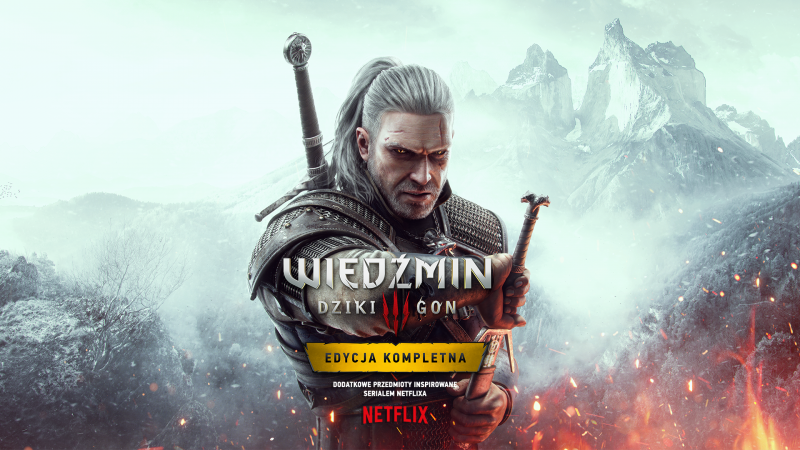
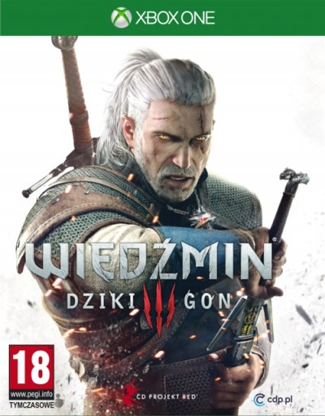

Pewnie zapyta pan dlaczego?
Niestety nie miałem innego pomysłu na inną grę
Są lepsze ale już tak wybrałem ¯\_(ツ)_/¯


Jeśli ktoś jeszcze nie posiada tej gry to polecam ją ponieważ
Obecnie można ją kupić po bardzo niskiej cenie ponad 30zł
A na GOGu czasami zdarzy się nawet za darmo ( ͡° ͜ʖ ͡°)
W następnej linijce link do kupna gry(produkt sponsorowany)
Link do gry(błędny)
Link do gry(poprawny 100%)
Akcja się dzieje na Kontynencie podzielonym przez
III Wojnę Północną konfliktem pomiędzy Cesarstwem Nillfgaardu
a zjednoczonymi Królewstwami Północy:Redanią oraz resztkami
pozostałych królewstw które zostały pokonane przez Nillfgaard.
Naszym zadaniem jako wiedźmin Geralt z Rivii m.in polować
na potwory. Opis gry w mocnym skrócie
Procesor Intel CPU Core i5 2500K 3,3 GHz lub konkurencyjny AMD Phenom II X4 940.
Karta graficzna NVIDIA GeForce GTX 660 albo AMD Radeon HD 7870.
Co najmniej 6 GB RAM.
Windows 7 lub Windows 8.1 (64-bit).